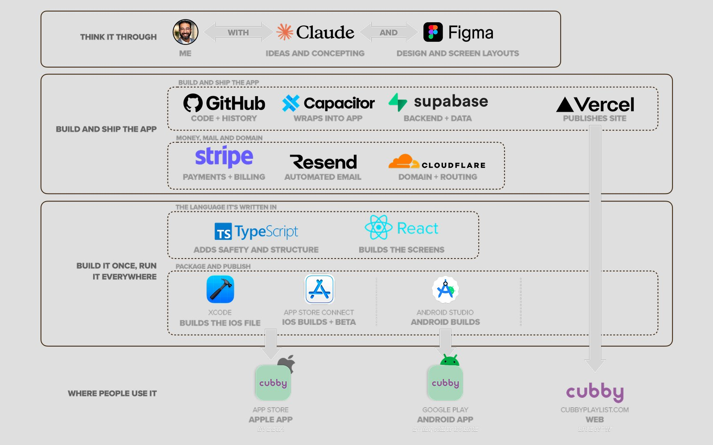
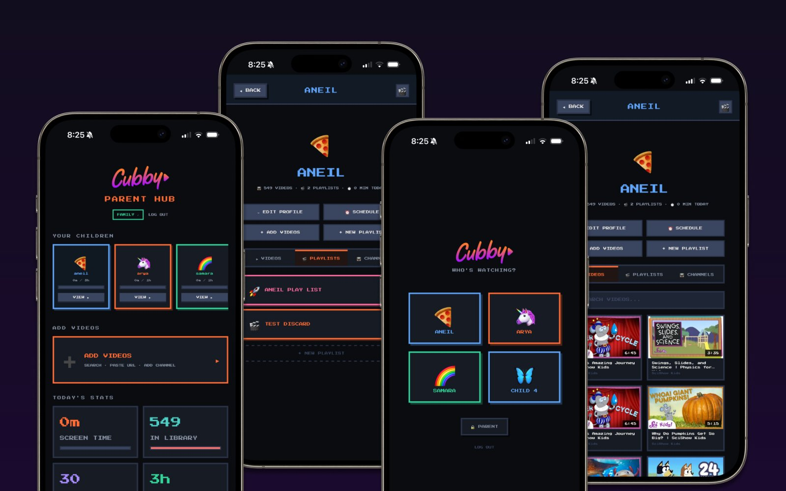
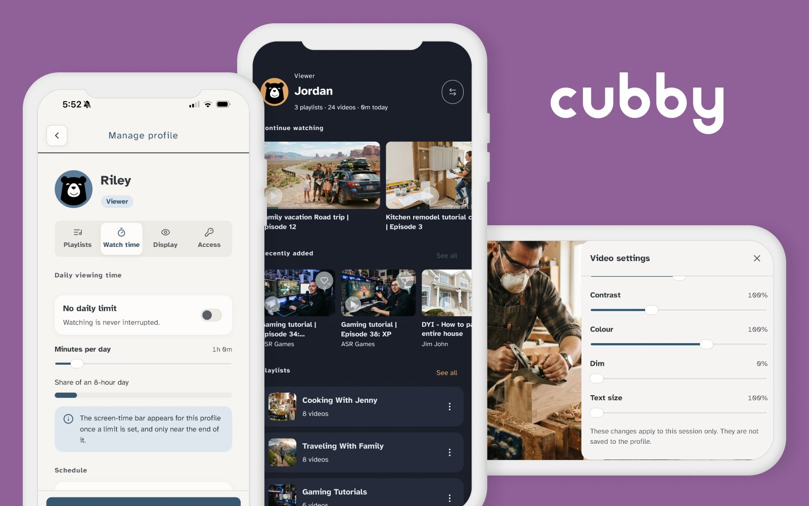

Cubby is a caregiver-curated video app for teens and adults with autism and intellectual and developmental disabilities. A trusted adult builds a locked-down library of approved videos; the viewer watches only what's chosen: no search, no recommendations, no autoplay. I designed, built, and shipped it solo, end to end, using AI-native tools, live on the App Store.
I built Cubby for kids first, then the caregivers I interviewed redirected me. Teens and adults with autism and IDD had no calm, locked-down way to watch, and the people who support them were stuck stitching together workarounds.
So I pointed Cubby at them. Caregiver interviews confirmed the need, and the pivot walked me out of the COPPA minefield before I committed the real build.

AI coding agents let me build far past normal design scope. I owned the architecture, the interaction, the UI, and the code, and held the whole thing to a real accessibility and safety bar the entire way.
The strongest decision on Cubby was a pivot: away from a crowded kids-video market, toward a community that actually needed what I was building.

Cubby began as a parent-controlled kids' viewing app: a Parent Hub, child profiles, and a curated feed of kid-safe videos. The space was saturated, COPPA-heavy, and hard to differentiate.

After competitive and legal analysis and caregiver interviews, I repositioned to an underserved community: teens and adults with autism and IDD. The same curated-video core, rebuilt around a Viewer experience and accessibility controls (contrast, dim, and text size) that this audience actually needs.